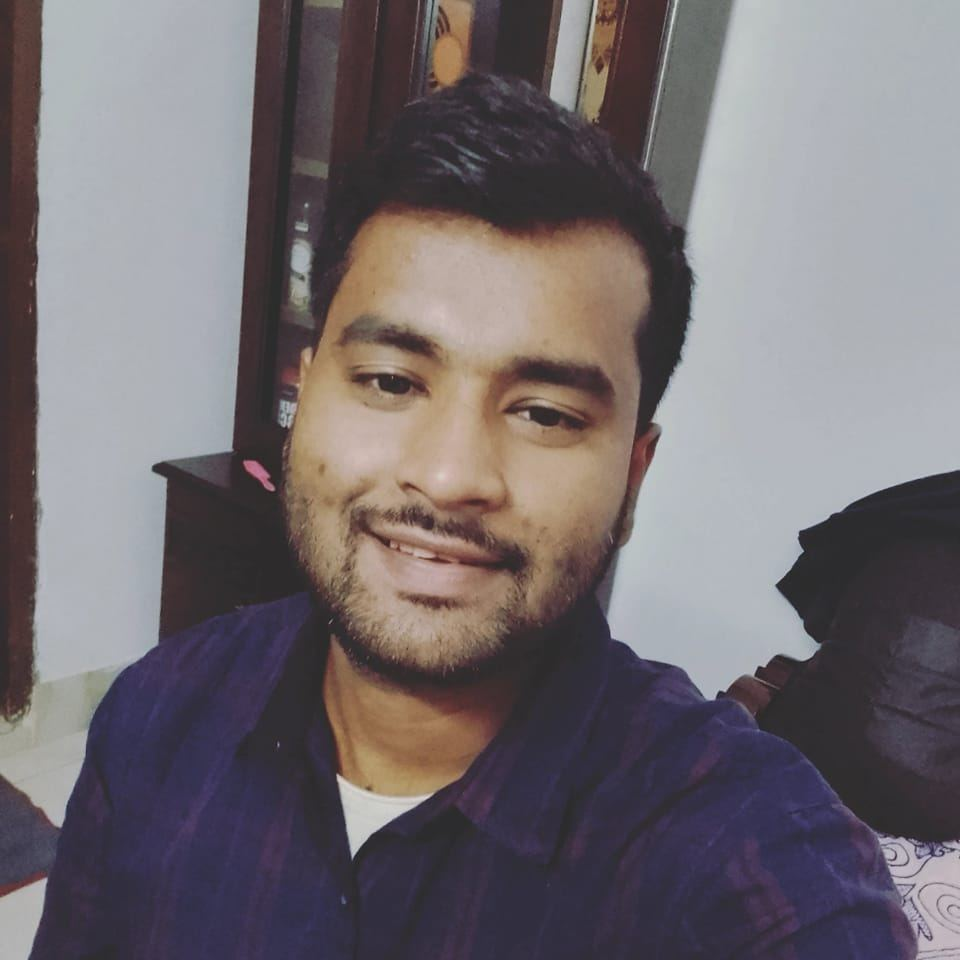

Curriculum Vitae

Foysal Ahmed Shakil
Phone: +8801893524002
Email: foysal.ahmed347@yahoo.com
Address: 64/A GL Roy Road, Rangpur Sadar, Rangpur
OBJECTIVE:
To Apply Media Production and creative arts background and the skills gained as a student leader and political campaign organizier to an intershop opportuinity at CNN.To Apply Media Production and creative arts background and the skills gained as a student leader and political campaign organizier to an intershop opportuinity at CNN.
Education
| MAy 2009 |
Georgia State University, Housing,Alianta,GA |
|
Bechelor Of Arts, Journalism/Concentration: Telecommunication |
Work Experince
| 2009- Now |
Georgia State University, Housing,Alianta,GA |
|
Resident Assistant, University Lofts |
| Mar-2008 |
Obama For America,St Louis, MO |
|
Youth Vote Deputy Field Organizer |
Qualification
Media Production
- Proficient With Final Cut Pro
- Created and Produced segments for the University Of Pittsburgh's Sport Nework
- Frequently Cobduct Research using Computerized Database
Creative Arts
- Creative Writer with a background in editing
- Personable Co-anchor with an adept knowdledge of the media
Leadership
- Dynamic leader and team builder, always willing to collaborate with others
- Truth and justice seeker with strong accountabilities